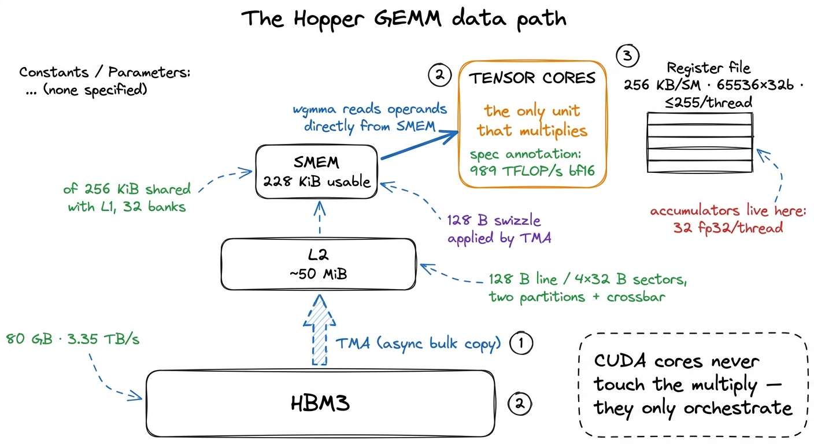
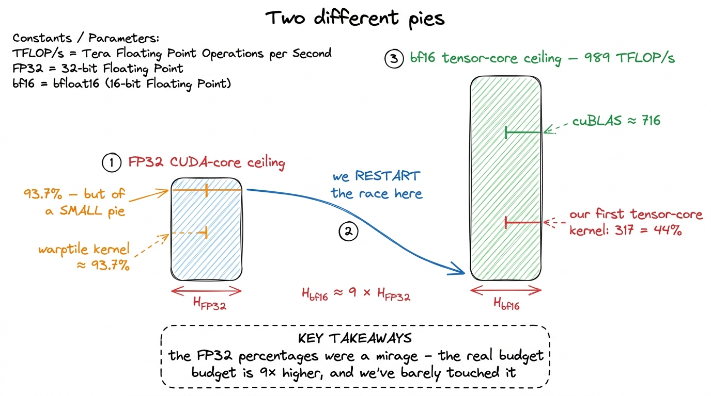
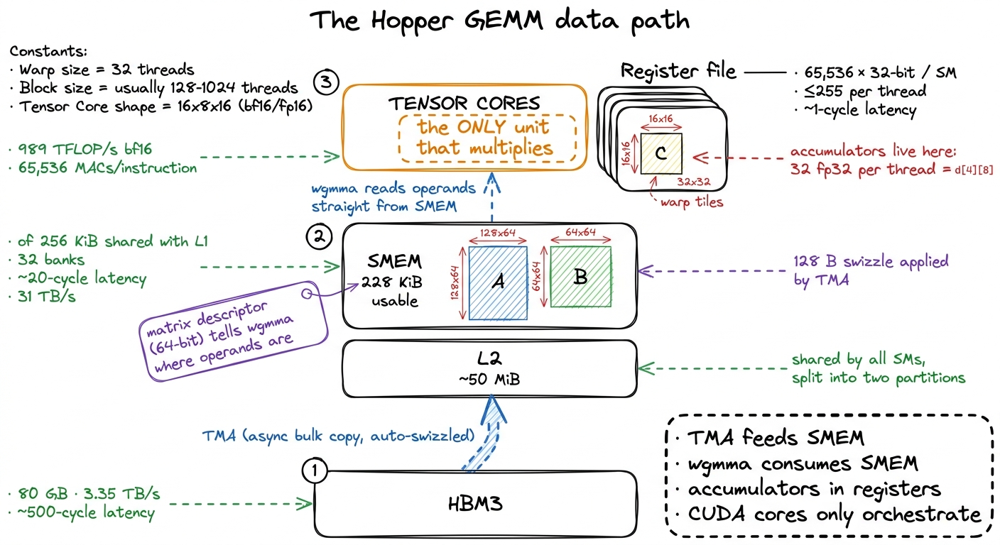
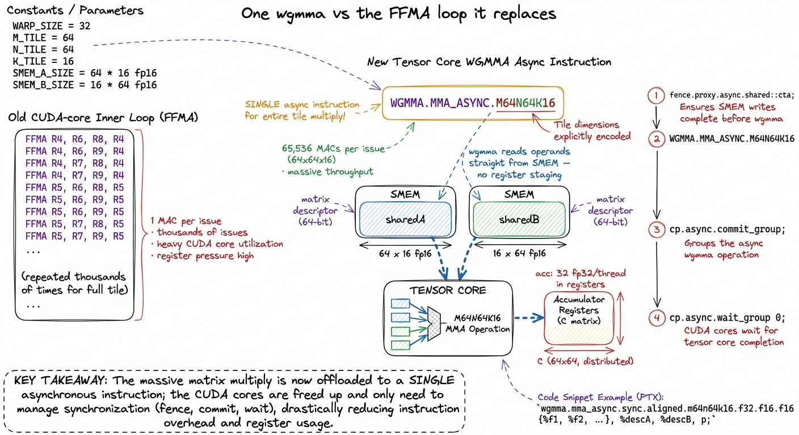
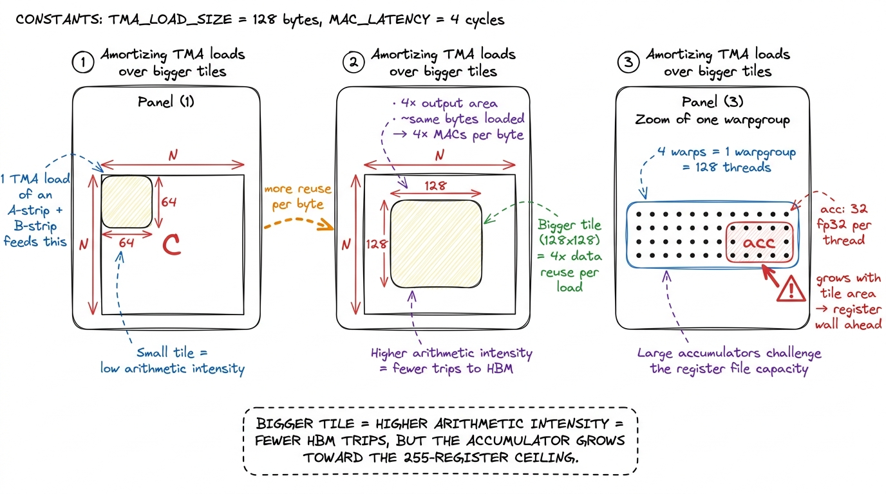
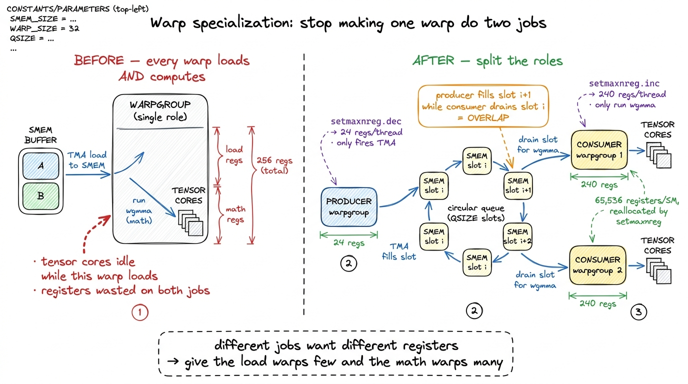
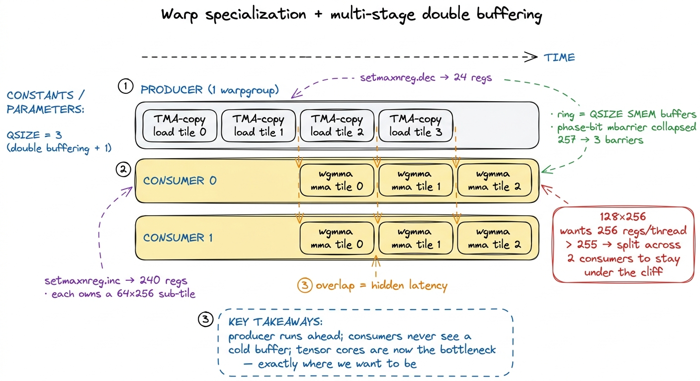
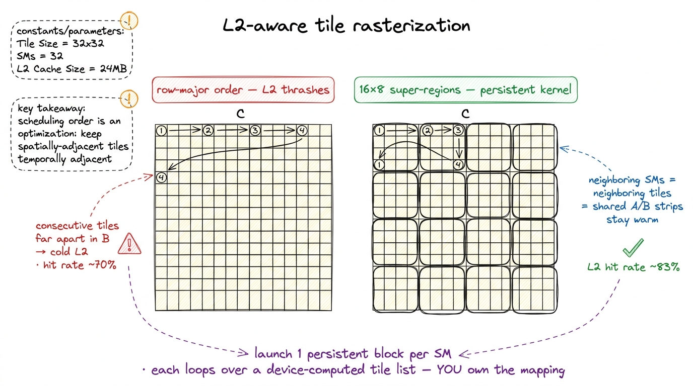
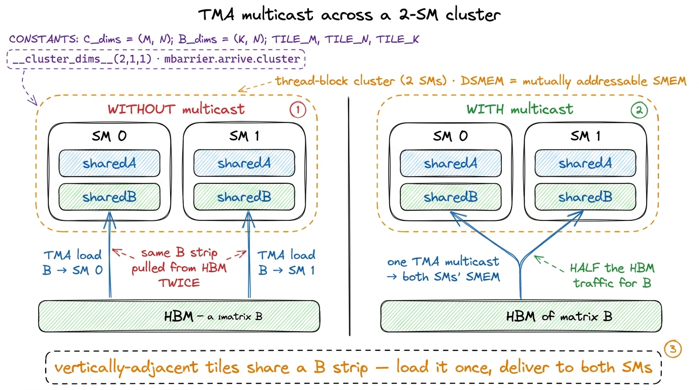
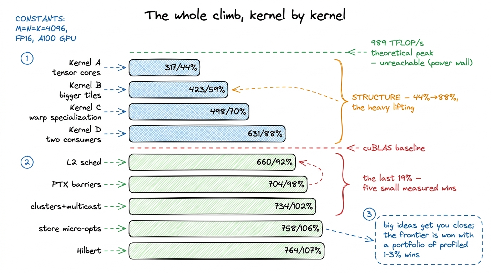

Beating cuBLAS on an H100 WORKLOG
Here is the question this article answers: can a hand-written kernel beat NVIDIA's own matrix-multiply library on their own flagship GPU? cuBLAS is the closed-source, hand-tuned code NVIDIA ships for exactly this. It is the number everyone quotes when they say "the GPU is fast." Beating it sounds absurd. By the end of this article we are at 107% of cuBLAS on an H100, and I want to walk you through every single step that got us there, slowly, from the beginning — so that if you have never written a GPU kernel in your life, you can still follow it top to bottom.
Let me set the ground first, because the rest of the article leans on it.
What a matrix multiply actually asks the hardware to do
A matrix multiply — GEMM, "general matrix-matrix multiply" — takes two matrices A and B and produces C = A × B. To get one number of the output, C[i][j], you walk across row i of A and down column j of B, multiply the pairs, and add them all up. That single operation — multiply two numbers and add the result to a running total — is called a multiply-accumulate, or MAC. It is the atom of everything here. Remember that word.
How many MACs does a full GEMM cost? For square matrices of size N, every output element needs N MACs, and there are N × N output elements, so the whole thing is N × N × N = N³ MACs. At N = 4096 — the size we will benchmark all article — that is 4096³ ≈ 6.9 × 10¹⁰, about 69 billion multiply-accumulates. Each MAC is two floating-point operations (one multiply, one add), so roughly 137 GFLOP of work. Hold that number.1 I'll use N = 4096 square, bf16 inputs with fp32 accumulation, on one H100 SXM5, all article. Smaller or non-square shapes shift the picture — at N = 1024 this same kernel hits 117% of cuBLAS because the problem turns memory-bound and cuBLAS's tail effects hurt it more. The ordering of the wins is what generalizes, not the exact percentages.
Now, the whole art of GEMM is not doing those 69 billion MACs — the chip does them blazingly fast. The art is feeding them. Every MAC needs two input numbers, and if you fetch both from main memory every time, you drown in memory traffic long before the arithmetic units break a sweat. GEMM is a story about memory, told through arithmetic. Keep that mental model in your pocket; we return to it at every step.

figure rendering · The one mental model for the whole article: the arithmetic units are rWhere the earlier kernels topped out, and why we must start over
Every earlier kernel on this site was a CUDA-core kernel. The CUDA cores are the GPU's general-purpose scalar arithmetic units — think of them as thousands of tiny calculators. A CUDA-core GEMM reads floats into registers (the fastest, closest scratch storage each thread owns) and issues FFMA instructions, one multiply-accumulate at a time. The entire game there was feeding those scalar pipes fast enough with clever tiling and vectorization.
That ladder tops out. In the warptile kernel we reached 93.7% of cuBLAS in FP32 and hit a wall the profiler stated plainly: register pressure — about 165 registers per thread — pinned occupancy near 18%, and the FMA pipe was already the bottleneck at roughly 57% active. There was no more scalar math throughput to buy. To go faster you have to stop using the CUDA cores for the multiply.
Here is the surprising part, worth stopping on. That "93.7% of cuBLAS" was 93.7% of the FP32 cuBLAS path — the library running on the same slow scalar cores. But an H100 has a completely different set of arithmetic units bolted on: the tensor cores. These do about 989 TFLOP/s of bf16 — nearly an order of magnitude more than the CUDA-core FP32 path. So our proud 93.7% was 93.7% of a small pie, and the entire tensor-core budget sat untouched on the floor.
This is why section 05 starts over. Forget the FP32 ladder's percentages. We re-baseline against tensor-core cuBLAS, which on this machine lands around 716 TFLOP/s at N = 4096.2 Why 716 and not the theoretical 989? Nobody, not even NVIDIA, runs every tensor core flat-out — power, occupancy, and tail effects cap the achievable peak well below the spec sheet. We meet this ceiling head-on at the very end; it's the reason "beating cuBLAS" tops out near 107% and not 130%. Our first tensor-core kernel — already exotic, already using two Hopper-only primitives — lands at only 44% of it. The whole climb from 44% to 107% is this article.

figure rendering · Restating the wall: the CUDA-core ceiling is a fraction of the tensor-The three Hopper-only pieces we need
Before the first kernel, meet the three mechanisms that define every fast Hopper GEMM. I'll introduce them plainly here and we will use them for the rest of the article.
TMA — the Tensor Memory Accelerator. A dedicated hardware copy engine that moves an entire 2D tile from global memory to shared memory with one instruction. You describe the tile once, on the host, as a 128-byte tensor map built by cuTensorMapEncodeTiled — base pointer, tile shape, strides — and hand it to the kernel as a __grid_constant__ parameter. Inside the kernel one thread fires the copy; everyone else waits on a barrier. Crucially, TMA also applies 128-byte swizzling to the destination automatically, so the bank-conflict padding gymnastics from the earlier kernels3 In the CUDA-core kernels we hand-padded shared tiles — e.g. STRIDE_A = (TILE_M % 32 == 0) ? TILE_M + 4 : TILE_M — to stop the 32 SMEM banks from colliding when 32 threads read at once. TMA's swizzle handles this in hardware, for free, so all that padding logic evaporates. simply disappear.
wgmma — warpgroup matrix-multiply-accumulate. The tensor-core instruction. A warp is 32 threads executing in lockstep — the GPU's natural scheduling unit; a warpgroup is four warps, 128 threads, acting as one. A single wgmma.mma_async.m64n64k16 instruction computes a 64×16 times 16×64 tile product — that is 64 × 64 × 16 = 65,536 multiply-accumulates from one instruction issue, versus one MAC per FFMA on the CUDA cores. That factor is the whole reason tensor cores exist.
Warp specialization. The idea that different warps should do different jobs — some only load, some only compute — rather than every warp doing everything. We build to this over three kernels; hold the term.
There is a subtle, beautiful detail in how wgmma gets its inputs. It reads operands directly out of shared memory — no staging through registers first — via a 64-bit matrix descriptor you build in-kernel. It packs the shared-memory base address (in 16-byte units, addr >> 4), the leading-dimension and stride offsets, and a two-bit swizzle-mode field; you build one per operand and the tensor core does the rest. The 64×64 output accumulator is spread across the 128-thread warpgroup as d[4][8] — 32 fp32 values per thread, living in registers.

figure rendering · The full data path. Every optimization in this article rearranges trafKernel A: the first tensor-core kernel — 44% of cuBLAS
Hypothesis: just moving the multiply onto the tensor cores, with the minimum viable async load path, should leapfrog everything the entire CUDA-core ladder achieved.
The kernel is almost embarrassingly simple in outline. A single thread fires a TMA copy to pull a tile of A and a tile of B into shared memory; the block waits on a barrier; the warpgroup issues a batch of wgmma instructions to multiply them, and the results land in the per-thread accumulator registers. The instruction stream that matters is a fence, a batch of async MMAs stepping through k, a commit, and a wait:
// one warpgroup, computing a 64x64 tile, 128 threads
wgmma_fence(); // wgmma.fence.sync.aligned
#pragma unroll
for (int k = 0; k < 4; ++k) // 4 steps of k16 across a k64 tile
wgmma_m64n64k16(desc_a[k], desc_b[k], acc); // wgmma.mma_async
wgmma_commit_batch(); // wgmma.commit_group
wgmma_wait<0>(); // wgmma.wait_group -> results in acc[]Read that as a contract with the tensor core. The fence says "the operands are ready, don't reorder around me." The loop issues four async MMAs — async matters, they return immediately and run in the background. commit bundles them into a group. wait blocks until that group finishes, at which point acc[] holds the answer. The CUDA cores here do almost nothing: fence, issue, commit, wait. They orchestrate; they never multiply.

figure rendering · The instruction that changes everything: one `wgmma` issue replaces thwgmma issue replaces thousands of FFMAs and reads its operands directly out of swizzled shared memory.Measurement: this kernel does about 317 TFLOP/s, or 44% of cuBLAS. From the FP32-baseline re-run at 4.5% to 44% in a single conceptual step. The tensor cores are finally lit.
But now the natural question: if the tensor cores are so fast, why only 44%? Think about what the hardware does over time. The profiler shows load and compute in lockstep — TMA copies a tile, then wgmma multiplies it, then TMA copies the next. While TMA works, the tensor cores idle; while they work, TMA idles. Concretely, the profiler timed one tile at roughly 1,415 cycles of load versus 703 cycles of tensor-core compute. The load takes twice as long as the math — and the math is politely waiting for it. Half our time is bubbles. Everything from here is about killing those bubbles through overlap.
Kernel B: bigger tiles — 59%
Hypothesis: each wgmma reuses its shared-memory operands across the whole output tile it helps compute, so a larger output tile amortizes each expensive TMA load over more math. This is arithmetic intensity again — the same lesson as the three regimes, now playing out at the tile level.
Let me make "arithmetic intensity" concrete, because it is the lever behind half this article. Load a 64×64 strip of A and a 64×64 strip of B, and with a 64×64 output tile you do a certain number of MACs per byte loaded. Now double the tile to 128×128. The output area is 4× bigger, but the strips you load grow only linearly — so you get roughly 4× the MACs per byte loaded. Same memory pipe, four times the useful work riding on it. That is the whole trick: reuse each loaded byte more times before throwing it away.
So we go from 64×64 output tiles to 128×128 (BM=128, BN=128, BK=64), and switch the instruction shape to m64n128k16. (wgmma fixes m64 and k16 but lets n run from 8 to 256 in steps of 8; bigger n means more output columns per instruction but more accumulator registers, and m64n128k16 is a sweet spot at ~2.5 KB of operand SMEM.) Nothing clever, just a bigger tile carrying more math per byte.
Measurement: 423 TFLOP/s, 59% of cuBLAS. A clean win, exactly as the arithmetic-intensity argument predicted. But 128×128 is walking us toward a cliff. The accumulators for a big tile live in registers, and registers are scarce — a single warpgroup can only get so wide before it runs out of them. We'll hit that wall in Kernel D. First, the structural idea that unlocks the real speedups.

figure rendering · Bigger output tiles reuse each shared-memory operand across more wgmmaKernel C: warp specialization — 70%
Hypothesis: the load and the math want different resources. TMA needs almost no registers — it just fires copies. wgmma wants almost all of them — for the accumulators. So it is wasteful to make the same warps do both. Split them.
This is warp specialization, the structural heart of every fast Hopper GEMM, so let's build it carefully. We dedicate one warpgroup as the producer: its only job is to fire TMA copies and fill a shared-memory buffer. The other warpgroups are consumers: they do nothing but wgmma on tiles the producer has already staged. They hand off through a circular queue of shared-memory buffers — a ring — guarded by barriers. The producer fills slot 0, then 1, then 2…; the consumer, one step behind, drains slot 0 while the producer fills slot 1. When the producer wraps around to reuse slot 0, a barrier guarantees the consumer has finished with it first.
Why does this help? Go back to our mental model — keep the mouth full. In Kernel A the tensor cores stalled whenever TMA was loading. Now the producer is always loading the next tile while the consumer chews the current one. The load of tile i+1 hides underneath the compute of tile i. This is double buffering in its first real form, and those 1,415 idle load-cycles we measured earlier start disappearing behind the math.
Now the resource split. This is where Hopper hands you a wonderful knob: setmaxnreg. Registers are a per-SM resource of exactly 65,536 32-bit slots, shared by whatever threads are resident. The producer warpgroup calls setmaxnreg.dec to release registers it doesn't need — down to as few as 24 per thread, since all it does is fire copies. The consumers call setmaxnreg.inc to claim those freed registers — up to 240 per thread — so they can hold big accumulators without spilling.4 The per-thread hardware maximum is 255 registers. setmaxnreg does not change that ceiling — it moves the budget between warpgroups within the SM's fixed 65,536-slot register file. It lets the math warps approach 255 by taking slots the load warps were never going to use. On its own this reallocation was worth about 27 TFLOP/s (~4%) in the author's measurements.

figure rendering · Warp specialization: one lean producer that only loads, register-hungrMeasurement: 498 TFLOP/s, 70% of cuBLAS. The producer runs ahead, the consumer never waits on a cold buffer, and the tensor cores stay lit while TMA works in the shadow of the math. This is the single most important structural idea in the article. Everything after it is refinement.
Kernel D: two consumers, and the register cliff — 88%
Hypothesis: one consumer warpgroup can't quite saturate four tensor cores on its own. Add a second consumer, make the tile taller to feed both, and deepen the pipeline so the producer can run further ahead.
We go to 128×256 tiles with two consumer warpgroups and one producer (three warpgroups total), each consumer handling a 64×256 sub-tile in parallel. We also deepen the ring to several stages so the producer can prefetch further into the future. This is where the wins get big — and where we hit the register cliff the last figure warned about.
Let's do the arithmetic that bites. At 128×256, the output accumulator alone wants 256 registers per thread. But the hardware ceiling is 255. One over. The compiler has no choice: it spills the overflow to local memory (which lives out in slow global memory, cached in L1). And spills between async wgmma operations are poison — they force the tensor cores to serialize instead of batching, and you get a compiler warning about exactly that. Your beautiful pipeline collapses into a stall.
How do we get back under 255? By splitting the work. With two consumer warpgroups, each owns a 64×256 sub-tile, so the accumulator footprint per thread halves — comfortably back under the ceiling — and setmaxnreg hands each consumer its 240 registers. The tile is bigger, the per-thread register cost is smaller, because two warpgroups share the load. At this point the consumers use 168 registers per thread, totaling 64,512 of 65,536 slots — 99% of the register file — and the ring depth QSIZE had to drop from 5 to 3 to fit the bigger tiles in SMEM. Every gain here is a negotiation between registers, shared memory, and pipeline depth.
There was also a synchronization tax hiding in the barriers, and it is a lovely example of measuring before believing. The naive queue used a token count that incremented on every buffer handoff — hundreds of atomic operations per tile row. Counting them up: 257 barriers per iteration. We replace this with phase-based barriers: a shared-memory mbarrier where instead of counting tokens you track a single parity bit and call mbarrier.try_wait on the expected phase. Initialize it once, reuse it across every iteration, never re-init. That collapsed synchronization from 257 barriers to 3.
Measurement: 631 TFLOP/s, 88% of cuBLAS. We are now genuinely close. And notice where the bottleneck sits: the profiler now says the tensor cores themselves are the limit. That is exactly where you want to be. It means the feeding problem is essentially solved — from here, further wins come from never letting a bubble form, and from being smarter about where the bytes physically come from.

figure rendering · The pipeline in full: one lean producer stays ahead of two register-huThe last nineteen percent
Everything above got us to 88% with big structural moves: tensor cores, bigger tiles, warp specialization, double buffering. The climb from 88% to 107% is a different kind of work. There is no single grand idea left. Instead it is a stack of small, measured, individually unglamorous wins — five of them — each worth low single-digit percent, each requiring its own profile to justify keeping. This is the part I'd tell a hiring manager to read closely, because it is where the discipline shows: predict, measure, keep only what the profiler credits.
Let me take them one at a time.
L2-aware scheduling → 92%
Here is a subtlety that never comes up until you're this close. Which thread block computes which output tile, and in what order, determines how much of A and B is already sitting in the L2 cache when a block needs it. The L2 cache is ~50 MiB, shared across all 132 SMs, and it is roughly 10× faster to hit than going out to HBM. If two neighboring blocks need overlapping strips of A, and they run at nearby times, the second one finds its data already warm in L2. If the schedule scatters them, L2 thrashes.
The default row-major tile order thrashes it. So we go persistent: instead of launching one block per output tile and letting the hardware schedule them however, we launch exactly one block per SM and have each block loop over a device-computed list of tiles. Now we own the tile-to-SM mapping — it is a program we write, not something the launch config hands us. We assign tiles in 16×8 super-regions (16 tiles along M, 8 along N) so that neighboring SMs work on neighboring tiles and reuse each other's L2 residency.5 Why 16×8 and not 2×2 or 4×4? Bigger super-regions mean more spatial locality within a group and fewer cache-cold transitions between groups. And one profiler surprise the author hit: trying to use all 132 SMs with an uneven grouping actually degraded locality by a couple TFLOP/s — a clean 128-SM (16×8) grouping beat a lumpy 132-SM one. Sometimes leaving four SMs idle is faster.
This lifted the L2 hit rate to about 83% — comfortably above the ~70% that both the row-major order and cuBLAS itself see — and bought 660 TFLOP/s, 92%.

figure rendering · Left, the default row-major order flings consecutive tiles across theFaster PTX barriers → 98%
The producer-consumer handshake was still routed through the CUDA barrier C++ API, which carries overhead — token bookkeeping, default counts, re-initialization. We drop to hand-written PTX mbarrier operations with manual phase tracking: track the parity of your wait calls yourself, reuse the same barrier across every iteration with no re-init, and shrink the token counts to 3 total (one producer arrive, one consumer arrive, one shared). This is plumbing — but plumbing on the critical path of every tile handoff, and it was worth a clean 10%: 704 TFLOP/s, 98% of cuBLAS. One point away.
Thread-block clusters + TMA multicast → 102%
Now the step that crosses the line. Hopper introduces a new level of hierarchy between the block and the grid: a thread-block cluster, a handful of SMs whose shared memory is mutually addressable. One SM can read another SM's shared memory directly. NVIDIA calls this pool Distributed Shared Memory (DSMEM).
Why do we care? Two vertically-adjacent output tiles — same columns, different rows — both need the same strip of B. Without clusters, each SM issues its own TMA load for that strip, pulling it from HBM twice. With a cluster of 2 SMs (__cluster_dims__(2,1,1)), we issue one TMA multicast: it delivers that B strip into both SMs' shared memory in a single load — half the HBM traffic for the shared operand. Cluster barriers extend the same mbarrier phase trick across SMs via mbarrier.arrive.cluster.6 Why only 2 SMs and not 4 or 8? The author tested larger clusters and they were slower — the inter-SM synchronization overhead outweighed the extra multicast savings. Two is the sweet spot. As always: measure, don't assume bigger is better.
This is the step that crosses the line: 734 TFLOP/s, 102% of cuBLAS. We are now, formally, beating NVIDIA's library.

figure rendering · Two SMs in a cluster that both need the same strip of B load it once vStore-path and micro-optimizations → 106%
Writing the fp32 results back out was still naive, and by now the un-overlapped final store is a measurable fraction of runtime — the profiler timed the store phase at roughly 4,572 cycles, far longer than the compute, though normally amortized across the K-loop. Three changes attack it:
- Reorder the register writes so consecutive registers map to nearby output addresses. This maximizes memory-level parallelism — the store unit can coalesce and pipeline adjacent writes instead of scattering. Worth ~5 TFLOP/s.
- Use write-through stores (
__stwt) so the output does not linger in L1/L2 and evict theA/Btiles we still want warm. The output is written once and never re-read; caching it just pollutes the cache. Worth ~5 TFLOP/s. - Route the store through shared memory and back out via TMA, asynchronously. Instead of stalling at the end of a tile to write results, stage them to SMEM and fire an async TMA store, so the write overlaps the next tile's compute. Worth ~11 TFLOP/s.
Add a scatter of instruction reordering and skipping the accumulator reset between tiles (wgmma has an accumulate flag, so you needn't zero C first, ~3 TFLOP/s), and these land us at 747 then 758 TFLOP/s — 104%, then 106%. The async store isn't free: staging outputs through SMEM steals capacity from the producer's ring buffer, forcing QSIZE down again. You trade a pipeline stage for the overlap, and it only pays because the un-overlapped store is now a real fraction of runtime — earlier in the climb this same change would have lost performance. Context is everything.
Hilbert-curve scheduling → 107%
The last, most marginal win. Recall the 16×8 super-regions kept tiles adjacent within a group, but at the boundaries between groups the schedule still jumps. What if consecutive tile assignments were always spatially adjacent, everywhere, with no boundaries? That is exactly what a Hilbert curve — a space-filling curve that visits a 2D grid so that consecutive points are always neighbors — gives you. Order the tiles along a Hilbert traversal of the output grid instead of by super-region, and L2 reuse is maximal at every single step.
764 TFLOP/s, 107% of cuBLAS — worth about 1% for a real jump in scheduling complexity (you now generate and index a Hilbert curve over the tile grid). This is the shape of the frontier: the closer you get, the more engineering each point costs.
What the last few percent actually cost, and the ceiling above it
Let me summarize honestly, because the summary is the lesson. Warp specialization and double buffering did the heavy lifting — 44% to 88%. The remaining nineteen points were bought with five separate ideas — L2 rasterization, hand-written barriers, cluster multicast, an async store path, and a space-filling curve — each worth low single digits, each demanding its own profile to justify. None is clever in isolation; together they are the difference between "close to cuBLAS" and "past it."

figure rendering · Every kernel on one chart: four structural moves carry you from 44% toAnd there is a hard ceiling above all of it. Past N = 4096 you hit a power wall. The H100's ~700 W envelope means you physically cannot run every tensor core flat-out at once — the chip would draw more than it's allowed. So the achievable fraction of the 989 TFLOP/s theoretical peak is bounded by watts, not cleverness. At N = 8192 this kernel drops to ~726 TFLOP/s (101% of cuBLAS) precisely because the larger problem forces more throttling. cuBLAS lives against the exact same wall — which is why "beating cuBLAS" tops out near 107% and not 130%. We are both bumping the same physical ceiling from underneath, and neither of us can push through it.7 One more honest wrinkle: at small sizes the story flips. At N = 1024 this kernel hits ~838 TFLOP/s and 117% of cuBLAS — not because our math is faster, but because the problem is memory-bound and cuBLAS's fixed tail overhead eats a bigger relative slice of a small workload. "107%" is the N=4096 number; the frontier moves with the shape.
So that is the frontier. The lesson isn't the number — it's that the last ten percent is a portfolio of measured, individually-unimpressive wins, and the discipline behind them is the same one we used on the very first naive kernel: form a hypothesis, write the code, profile it, keep the change only if the profiler credits it, move on. The tools got exotic — TMA, wgmma, clusters, DSMEM, Hilbert curves. The loop never changed.8 Everything here targets sm_90a; TMA, wgmma, clusters, and DSMEM are Hopper-specific. On Blackwell the data path shifts again: tcgen05 MMAs write into a new Tensor Memory (TMEM) rather than registers, CTA pairs replace the two-SM cluster idiom, and NVFP4 block-scaled formats change the arithmetic itself. A different frontier — same worklog.